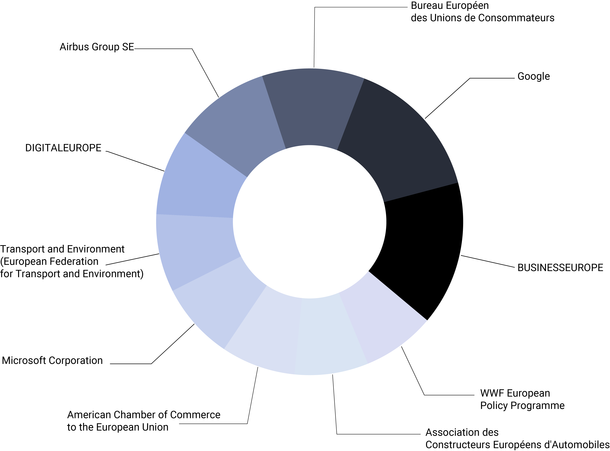

Lobbying in the EU
Lobbying at the European Union level is increasingly a part of the political decision-making process and thus part of the legislative process.
Trade and Business Associations
Non-Governmental Organisations
Professional Consultancies
Think Tanks and Research Institutions
Private Companies and Groups
SOURCE: Lobbyfacts.eu
The big picture
Private Companies, Trade and business associations, NGOs, Consulting groups and Think tanks are the main lobbyists' categories. Who are Europe's top lobbyists and how much are they spending on lobbying? Hover over the chart and find out. Hint: the bigger the bubble, the bigger the budget.
Where does the data come from?
LobbyFacts is a one-stop-shop of data on EU lobbying in Brussels. Using data drawn, in real time, from the official EU lobby transparency register and the Commission’s published lists of its high-level lobby meetings, LobbyFacts brings together data on lobby spend and turnover; numbers of lobbyists and European Parliament pass-holders; high-level Commission meetings held; country of origin; issues lobbied on; and other info. It offers an extensive dataset on lobbying in the EU, along with a real-time updating API.
Who are the most active lobbyists?
Google, the trade association BusinessEurope as well as the European Consumer Organisation are the top 3 most active lobbyists based on the number of meetings they have participated. Definately an index showing an organization's eagerness to actively participate in summits and meetings shaping the EU's policies on an array of issues, here is the list of the top 10 organizations and companies participating in the most meetings.
SOURCE: Lobbyfacts.eu